-
Abrotech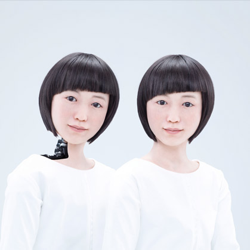Abrotech Dave Mackay - Naomi Taka (US)
Projet de recherche sur le clonage cybernétique
-
John Fabrei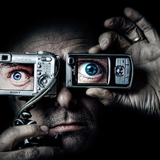John Fabrei Dave Mackay - Naomi Taka (US)
Inventeur - recycleur
-
miguel parovla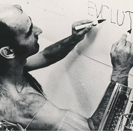miguel parovla
Marionettes & exosquelettes
-
L33 - AustinL33 - Austin Antoine Rieux - Marion Varelle - John Doe (Fr)
Les virtuoses du speed painting
-
Bot Project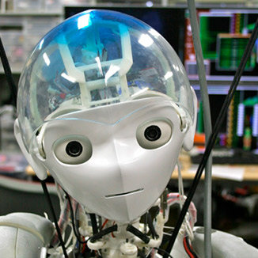Bot Project Arthur Makano Emilie Port
le meilleur de la robotique
-
Metamorphis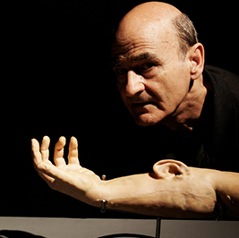Metamorphis Jacque Dewit (RU)
Voyage dans le temps
-
BIO-PROTEC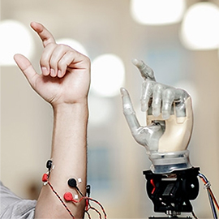BIO-PROTEC George Mac Laurent
les prothèse bioniques débarquent !
-
z-machines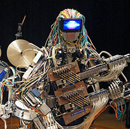z-machines Kenjiro Matsuo
Les robots ont du talent
-
dancing bot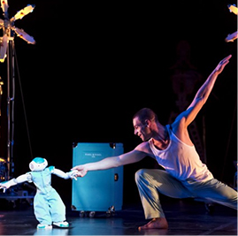dancing bot Eva Nawel - Patrick Veil
Danse & connectiques pour le plaisir des yeux
-
proto-stream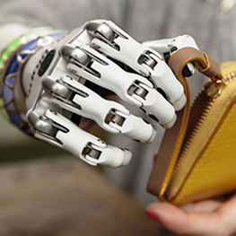Proto Stream Marie Jikka - Harry Miles (BE)
Robots de haute précision
-
Jane MasoniJane Masoni Jane Masoni & Paul Kant
Conférence sur l'intelligence artificielle.
-
Patrick harno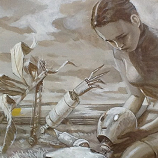Patrick Harno
Coup de crayon & anticipation
-
Zora bots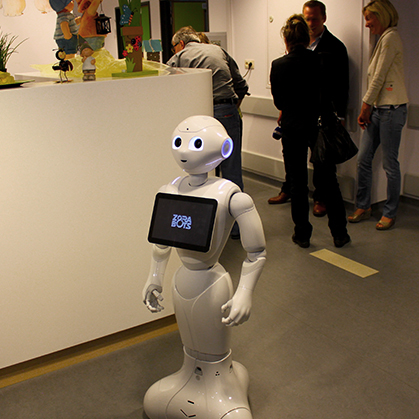zora bots
Des robots à l'hôpital pour l'assistance des patients
-
Smart-Pixel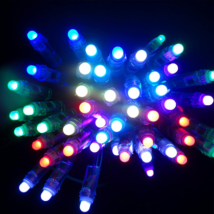Smart-Pixel
La start-up de la réalité augmentée
-
EXOTIC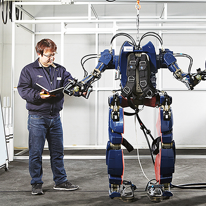Exotic
Exosquelettes pour la réparation du corps humain
-
shit-robot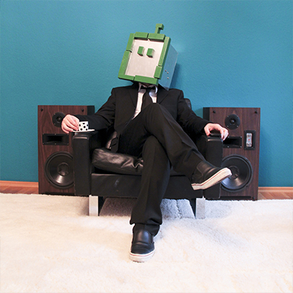shit-robot
Le célèbre DJ au masque de robot continue son ascension electro
-
robot koch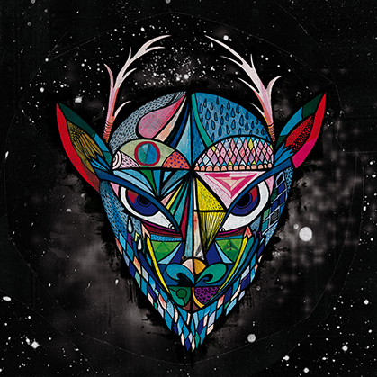robot koch
Un son futuriste et organique
-
Choe-U-Ram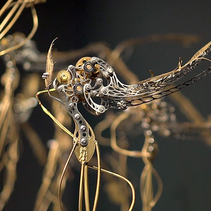Choe-U-Ram
des êtres mécaniques plus vrais que nature
-
I robot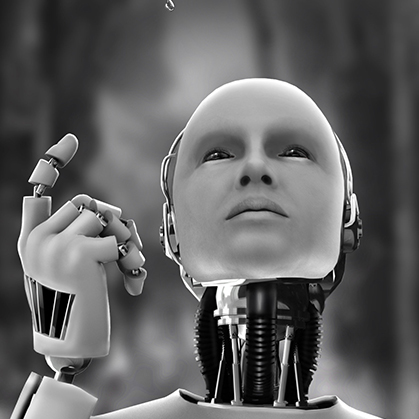I Robot
Le célèbre film inspiré de l'oeuvre d'Isaac Asimov, à découvrir ou à redécouvrir
-
Laurent Alexandre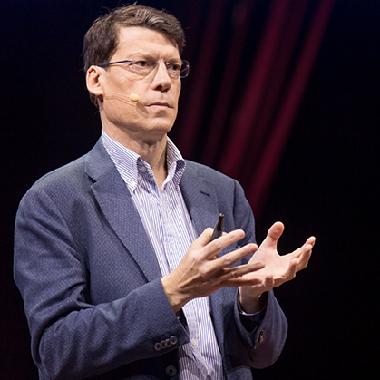Laurent Alexandre
Rencontre exceptionnelle avec le célèbre expert en transhumanisme
-
Des robots et des hommes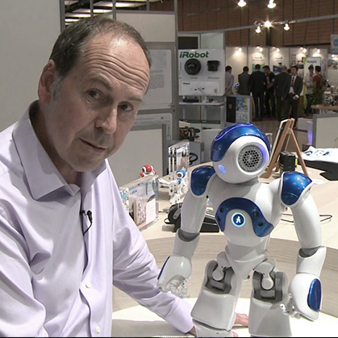Des robots et des hommes avec Philippe Bidaud
La théorie des hubots, une nouvelle vision de l'avenir